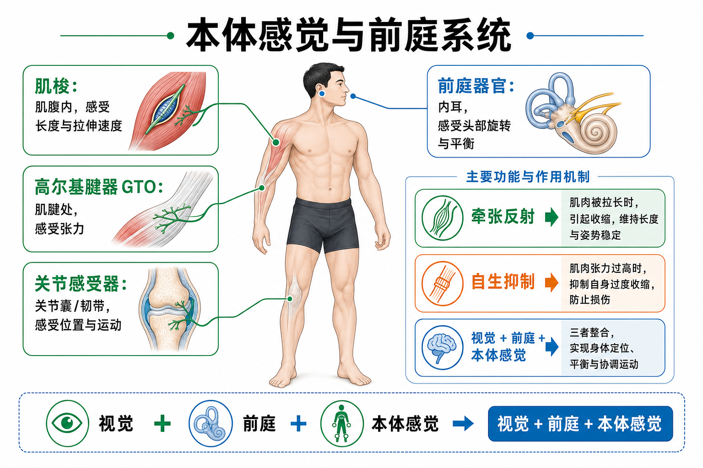

Day 8 · 本体感觉与前庭系统
一句话总结
本体感觉像身体内置导航: 肌梭盯长度和拉伸速度，GTO 盯张力，关节感受器盯关节位置，前庭系统盯头部和平衡。跳得更高、站得更稳、拉伸后更放松，都离不开这套传感器。

核心要点
-
本体感觉: 不看眼睛也知道身体位置，是动作控制底层反馈。
字面意思
本体感觉 = proprioception，意思是身体对自己位置、运动和受力的感觉。它来自肌肉、肌腱、关节和前庭的神经信号。
大白话类比它像汽车的倒车雷达和陀螺仪: 你不一定看见轮胎角度，但系统一直知道车身怎么动。
训练含义深蹲时膝盖能不能对齐脚尖、单腿站时骨盆能不能稳住，靠的不只是力量，也靠本体感觉反馈。
-
肌梭: 位于肌腹内，感受肌肉长度变化与拉伸速度，触发牵张反射。
字面意思
肌梭 = muscle spindle，spindle 是纺锤。它藏在肌肉里面，和普通肌纤维平行，专门侦测肌肉被拉长多少、拉得多快。
大白话类比肌梭像肌肉里的弹簧报警器。弹簧突然被拉长，它立刻报警，让肌肉反射性收缩。
真实例子膝跳反射就是经典例子: 敲髌腱让股四头肌被快速拉长，肌梭报警，股四头肌反射性收缩，小腿弹起。
-
牵张反射: 肌肉被快速拉长后自动收缩，是 SSC 的前置机制之一。
机制拆开训练例子
1. 快速拉长
输入肌梭感到长度和速度突然增加。
2. 脊髓反射
处理信号可在脊髓层面快速处理。
3. 肌肉收缩
输出同一块肌肉更快收缩，保护组织并增强短时间爆发。
篮球起跳前快速下沉再弹起，会用到牵张反射和弹性储能；但控制差时，反射优势会变成损伤风险。
-
高尔基腱器 GTO: 位于肌腱处，感受张力，过高时触发自生抑制。
字面意思
GTO = Golgi Tendon Organ，中文是高尔基腱器。它在肌肉和肌腱连接附近，盯的是拉力/张力有多大。
大白话类比GTO 像肌腱上的保险丝。张力太大时，它会让同一块肌肉降低兴奋，避免肌腱或肌肉被硬拉坏。
训练含义SMR 泡沫轴、PNF 拉伸常借自生抑制降低紧张感。肌梭偏向“快拉要收缩”，GTO 偏向“张力太大要刹车”。
-
关节感受器: 关节囊和韧带里的传感器，告诉大脑关节角度、压力和运动。
主要类型
真实例子感受器 主要感受 训练理解 鲁菲尼小体 持续压力、关节位置 像慢速位置传感器，帮助姿势控制。 帕西尼小体 快速变化、震动、加速度 像动作变化报警器，帮助快速反应。 高尔基样感受器 韧带张力和终末角度 像关节极限提示器，提醒别顶到危险范围。 踝关节扭伤后，力量恢复但仍反复崴脚，可能是韧带和关节感受器反馈变差。
-
前庭系统: 内耳里的平衡系统，感受头部旋转、加速度和相对重力方向。
两个核心部件
半规管主要感受头部旋转，像三维转向仪；耳石器官主要感受线性加速度和头部倾斜，像水平仪。
训练例子转体跳、快速变向、倒立、波比跳后站不稳，往往不是腿完全没力，而是前庭、视觉和本体感觉整合还没稳定。
-
SSC: 牵张-缩短循环借助快速预拉伸，把反射和弹性势能接到爆发动作里。
第一次讲清缩写
SSC = Stretch-Shortening Cycle，中文是牵张-缩短循环。意思是肌肉先被快速拉长，再立刻缩短发力。
大白话类比像把橡皮筋先拉开再松手。拉开的过程存一点弹性势能，肌梭还会帮忙提高收缩反应。
训练判断箱跳、纵跳、短冲刺起步都用到 SSC；新手先学会落地控制和膝髋对齐，再追求更快反弹。
常见误区
❌很多人以为肌梭和 GTO 都是“拉伸感受器”。✅其实肌梭看长度和速度，GTO 看张力，反射方向也常相反。
❌很多人以为泡沫轴是“压碎结节”。✅更靠谱解释是改变神经系统对张力和疼痛的调节。
❌很多人以为平衡训练越不稳定越高级。✅不稳定太强会牺牲动作质量和力量输出。
记忆口诀
肌梭看长短，快拉就反弹；GTO 看张力，太紧先刹车；关节报位置，前庭管平衡。
翻转卡复习
实操关联
- 增肌: 主项训练仍以稳定发力为主，不要把大重量卧推、深蹲放在过度不稳定表面上。
- 爆发: 跳跃和冲刺前的快速预拉伸能用到肌梭和 SSC，但前提是落地位置可控。
- 康复: 踝扭伤后除了力量，还要做单腿站、闭眼平衡、方向触地等本体感觉重建。
- 柔韧: PNF 或长时间拉伸可能借 GTO 和神经抑制降低紧张感。
- 平衡: 初学者先从稳定地面、慢速动作开始，再逐步减少视觉、增加方向变化。
- 考试: 看到“长度/速度”选肌梭；看到“张力/自生抑制”选 GTO；看到“头部旋转/耳石”选前庭。